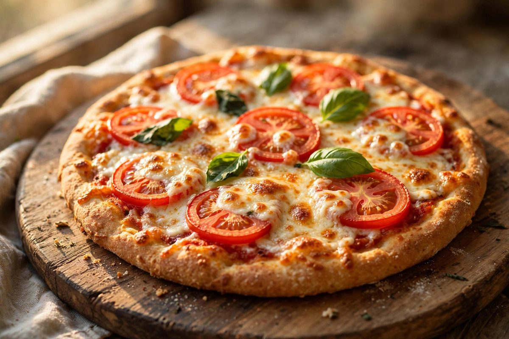

Home » Guides
Gluten-Free Pizza

Gluten-free pizza is one of the most requested gluten-free dishes, and it is also one of the most satisfying when it works. A good gluten-free pizza base should be crisp on the outside, soft inside, and strong enough to hold its toppings without falling apart. That is harder without gluten, but it is entirely possible with the right dough, the right baking method, and a little practice. This guide covers the best bases, how to get a crisp crust, and topping ideas that suit a gluten-free pizza.
Choosing a base
There are three good options for a gluten-free pizza base. A yeast dough made with gluten-free bread flour gives the most bread-like result, but it needs time to rise. A quick dough made with gluten-free self-raising flour, yoghurt, and a little oil is faster and works well for a thin base. A ready-made gluten-free base or a cauliflower base is the quickest option, although ready-made bases vary in quality. Choose the base that fits the time you have: a yeast dough for the weekend, a quick dough for a weeknight, and a ready-made base when you are in a hurry.
A quick pizza dough
Mix 250 grams of gluten-free self-raising flour, 200 grams of Greek yoghurt, a tablespoon of olive oil, and a pinch of salt until a soft dough forms. Let it rest for ten minutes, then roll it out on a floured surface to about half a centimetre thick. The dough is softer than wheat dough, so handle it gently and use baking paper to move it. Spread a thin layer of tomato sauce, add cheese and toppings, and bake at 220 degrees Celsius for 12 to 15 minutes, until the base is crisp and the cheese is bubbling. This makes two medium pizzas.
Getting a crisp crust
A hot oven is the key to a crisp gluten-free pizza base. Preheat the oven fully, and preheat a baking tray or pizza stone inside it, so the base starts cooking the moment it goes in. Roll the base thin, because a thick gluten-free base stays soft in the middle. Use less sauce than you would on a wheat pizza, because too much sauce makes the base soggy. Bake the base for five minutes before adding toppings, which helps it crisp up. Let the pizza rest for a few minutes after baking so the base firms up before you slice it.
Topping ideas
Keep toppings simple and do not overload the base, because a heavy topping makes a gluten-free base soggy. A classic margherita with tomato, mozzarella, and basil is a good start. A vegetable pizza with peppers, mushrooms, and red onion works well. A chicken and sweetcorn pizza is popular with children. Avoid very wet toppings like large amounts of fresh tomato or pineapple, unless you drain them well. Use a good quality mozzarella that melts well, and add fresh herbs after baking for the best flavour.
Pizza night at home
A homemade pizza night is a good family tradition, and it works well gluten-free. Let everyone make their own pizza, choosing their own base and toppings, which makes the meal fun for children and adults alike. Prepare the dough in advance and set out bowls of sauce, cheese, and toppings on the table. Bake the pizzas one or two at a time in a hot oven, and eat them as they come out. A pizza night is relaxed, sociable, and easy to adapt, and it shows that gluten-free food can be the centre of a celebration rather than an afterthought.
Frequently Asked Questions
Can I use a normal pizza recipe with gluten-free flour?
Mostly yes, if you use a 1-to-1 gluten-free flour blend and let the dough rest. The dough will be softer and stickier than wheat dough.
Why is my gluten-free pizza base soggy?
Usually too much sauce, a base that is too thick, or an oven that is not hot enough. Pre-bake the base and use less sauce.
Is cauliflower pizza base gluten-free?
Usually yes, but check the recipe or the label. Some cauliflower bases use wheat flour as a binder, so always check.
Important: if you have celiac disease or a wheat allergy, always check labels and look for certified gluten-free products. This site is general information only — talk to your doctor or a registered dietitian before changing your diet.